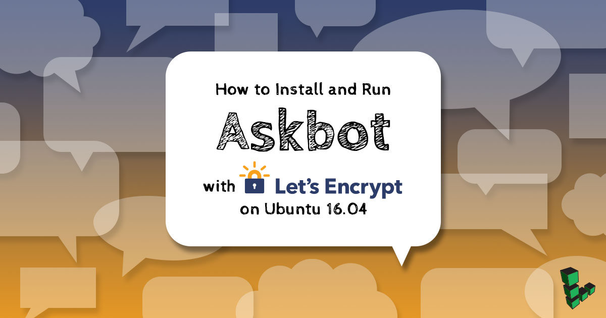
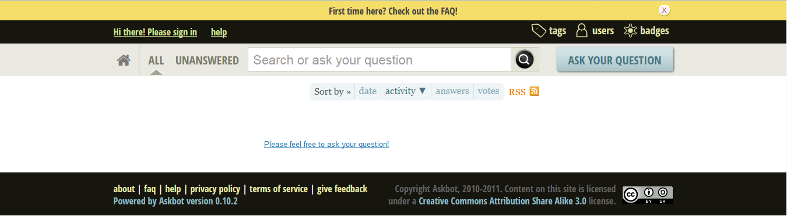
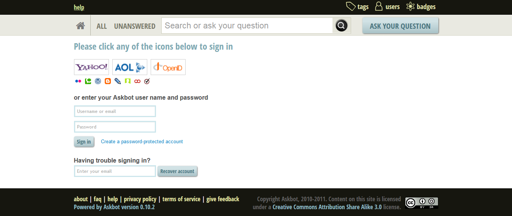
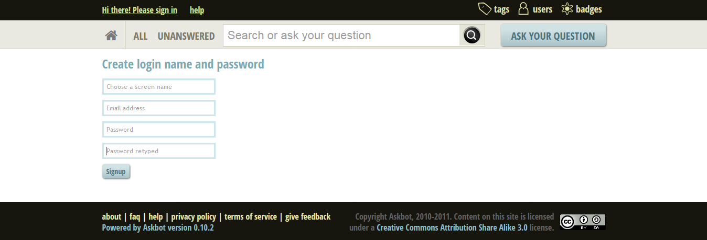
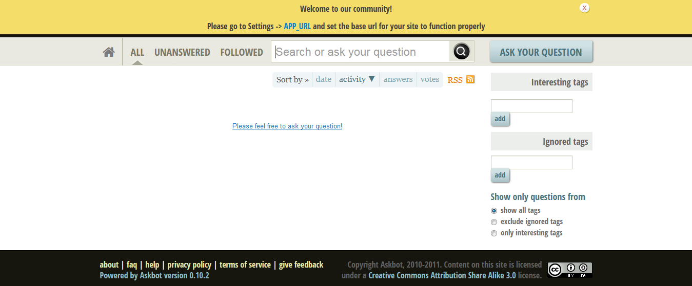
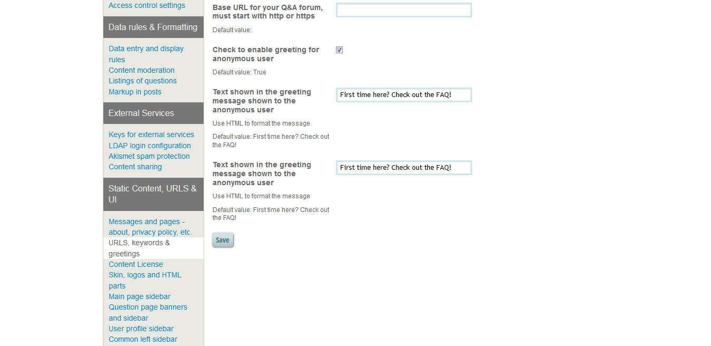
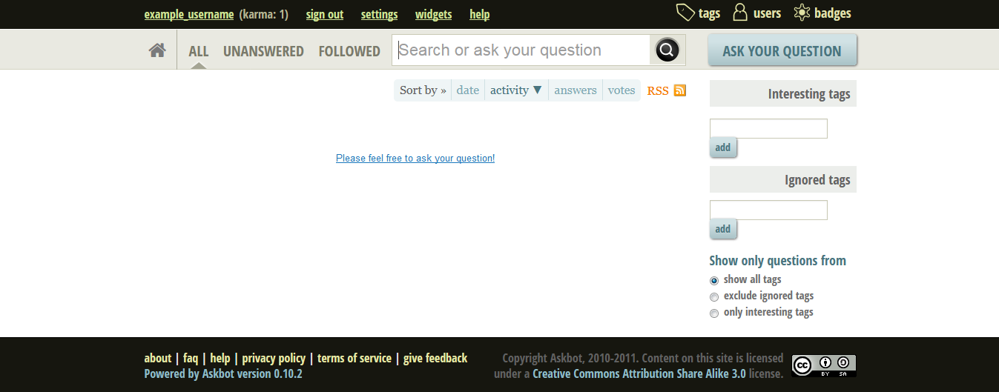

How to Install and Run AskBot with LetsEncrypt SSL on Ubuntu 16.04
Updated by Linode Contributed by Gopal Raha

What is AskBot?
AskBot is an open-source question-and-answer forum written in Django and Python. It provides features similar to StackOverflow, including a karma-based system, voting, and content moderation. It is used by many popular open source communities such as Ask-FedoraProject and Ask-OpenStack.
In this guide, you’ll install AskBot and deploy with NGINX as a web server, MySQL as a database server, Gunicorn as a Python WSGI HTTP Server and LetsEncrypt as a free SSL certificates provider on your Ubuntu 16.04 Linode.
Before You Begin
Familiarize yourself with our Getting Started guide and complete the steps for setting your Linode’s hostname and timezone.
This guide will use
sudowherever possible. Complete the sections of our Securing Your Server to create a standard user account, harden SSH access and remove unnecessary network services.Update your system:
sudo apt-get update && sudo apt-get upgradeA Fully-Qualified Domain Name configured to point to your Linode. You can learn how to point domain names to Linode by following the DNS Manager Overview guide.
NoteThroughout this guide, replaceexample_userwith a non-root user withsudoaccess. If you’re not familiar with Linux user permissions and thesudocommand, see the Users and Groups guide.
Install Dependencies and Create a Database
Install the required packages, including NGINX, MySQL, Python PIP, and LetsEncrypt:
sudo apt-get install -y python-pip python-dev nginx mysql-server libmysqlclient-dev letsencryptLog in to MySQL as the root user:
sudo mysql -u root -pWhen prompted, enter the root password.
Create a new MySQL user and database. In the example below,
askbotdbis the database name,dbuseris the database user, anddbpasswordis the database user’s password.CREATE DATABASE askbotdb CHARACTER SET UTF8; CREATE USER dbuser@localhost IDENTIFIED BY 'dbpassword'; GRANT ALL PRIVILEGES ON askbotdb.* TO dbuser@localhost; FLUSH PRIVILEGES;Exit MySQL:
exit
Install AskBot
Create a directory to install AskBot. Remember to replace
example_userwith the name of a non-root user on your Linode:mkdir -p /home/example_user/askbotEnsure that
pipis the latest version:sudo pip install --upgrade pipUse
pipto installvirtualenv:sudo pip install virtualenvCreate a Python virtual environment using
virtualenv:virtualenv /home/example_user/askbot/askbotenvActivate the Python virtual environment:
source /home/example_user/askbot/askbotenv/bin/activateInstall AskBot and its dependencies:
pip install askbot mysqlclient mysql-python gunicorn
Configure AskBot
Initialize the AskBot setup files. Use the database name, user, and password that you created earlier:
askbot-setup -n /home/example_user/askbot/ -e 3 -d askbotdb -u dbuser -p dbpasswordNote
For more detailed information about the arguments toaskbot-setup, user the-hflag:askbot-setup –h.Use
collectstaticto place all of the static files (css, javascript, and images) into the AskBot installation directory:python /home/example_user/askbot/manage.py collectstatic --noinputWhen you install or upgrade AskBot, you should run
makemigrationsandmigrate:python /home/example_user/askbot/manage.py makemigrations python /home/example_user/askbot/manage.py migrateTurn off the Debug mode in
settings.pyto run AskBot in the production environment:sed -i "s|DEBUG = True|DEBUG = False|" /home/example_user/askbot/settings.pyChange the URL of the static files from
/m/to/static/:sed -i "s|STATIC_URL = '/m/'|STATIC_URL = '/static/'|" /home/example_user/askbot/settings.py
Deploy AskBot with Let’s Encrypt SSL
NoteThis section requires that you have a Fully Qualified Domain Name (FQDN) that is configured to point to your Linode. In the examples below, replaceexample.comwith your FQDN.
Edit
/home/example_user/askbot/wsgi.py:- /home/example_user/askbot/wsgi.py
-
1 2 3 4import os os.environ.setdefault("DJANGO_SETTINGS_MODULE", "settings") from django.core.wsgi import get_wsgi_application application = get_wsgi_application()
Create a
systemdservice for Gunicorn so that it can run as a service. Create the followinggunicorn.servicefile:- /etc/systemd/system/gunicorn.service
-
1 2 3 4 5 6 7 8 9 10 11 12 13[Unit] Description=gunicorn daemon After=network.target [Service] User=example_user Group=www-data WorkingDirectory=/home/example_user/askbot Environment="PATH=/home/example_user/askbot/askbotenv/bin" ExecStart=/home/example_user/askbot/askbotenv/bin/gunicorn --workers 3 --bind unix:askbot.sock wsgi:application [Install] WantedBy=multi-user.target
Enable and start the Gunicorn service:
sudo systemctl start gunicorn sudo systemctl enable gunicornRestart NGINX and reload the daemon:
sudo systemctl daemon-reload sudo systemctl restart nginxUse Let’s Encrypt to obtain an SSL certificate for your domain:
sudo letsencrypt certonly -a webroot --agree-tos --email admin@example.com --webroot-path=/var/www/html -d example.com -d www.example.comRemove the default NGINX Server Blocks (Virtual Host) and the default NGINX index file to add new AskBot server blocks:
sudo rm -rf /etc/nginx/sites-available/default /etc/nginx/sites-enabled/default /var/www/html/index.nginx-debian.htmlAdd new
askbotNGINX Server Blocks (Virtual Host) to run AskBot in the production environment:- /etc/nginx/sites-available/askbot
-
1 2 3 4 5 6 7 8 9 10 11 12 13 14 15 16 17 18 19 20 21 22 23 24 25 26 27 28 29 30 31 32 33 34server { listen 80; server_name example.com www.example.com; return 301 https://$server_name$request_uri; } server { listen 443; server_name example.com www.example.com; ssl on; ssl_certificate /etc/letsencrypt/live/example.com/fullchain.pem; ssl_certificate_key /etc/letsencrypt/live/example.com/privkey.pem; ssl_protocols TLSv1 TLSv1.1 TLSv1.2; location ~ /.well-known { allow all; root /var/www/html; } location = /favicon.ico { access_log off; log_not_found off; } location /static/ { root /home/example_user/askbot; } location /upfiles/ { root /home/example_user/askbot/askbot; } location / { include proxy_params; proxy_pass http://unix:/home/example_user/askbot/askbot.sock; } }
Add a symbolic link between NGINX server blocks:
sudo ln -s /etc/nginx/sites-available/askbot /etc/nginx/sites-enabledThe www-data group must have access to AskBot installation directory so that NGINX can serve static files, media files, and access the socket files. Add the
example_userto www-data group so that it has the necessary permissions:sudo usermod -aG www-data example_userRestart NGINX so that the changes take effect:
sudo systemctl restart nginx
Set Up an AskBot Admin Account
Open a web browser and navigate to your Linode’s domain name:

Click on create a password-protected account to create an Admin Account:

Note
The first account created using the above method will be treated as an admin account. Any subsequent accounts will be normal accounts.Choose an admin username and password:

Set your domain name with AskBot using base url settings by clicking APP_URL:

Add your domain name in the place of Base URL box and click Save:

AskBot is now ready to run. Access the AskBot admin interface and customize it according to your needs:

Next Steps
At this point you are ready to begin posting on your forum. For more information about AskBot’s configuration options, check out the AskBot Documentation.
More Information
You may wish to consult the following resources for additional information on this topic. While these are provided in the hope that they will be useful, please note that we cannot vouch for the accuracy or timeliness of externally hosted materials.
Join our Community
Find answers, ask questions, and help others.
This guide is published under a CC BY-ND 4.0 license.